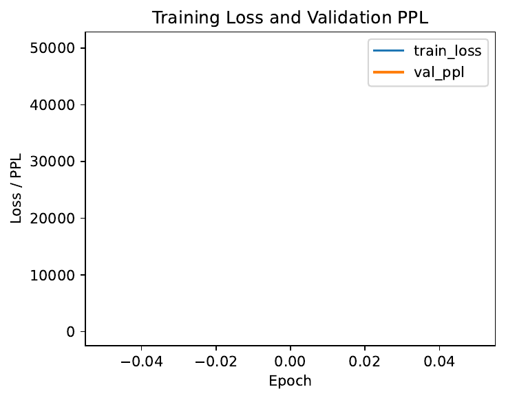
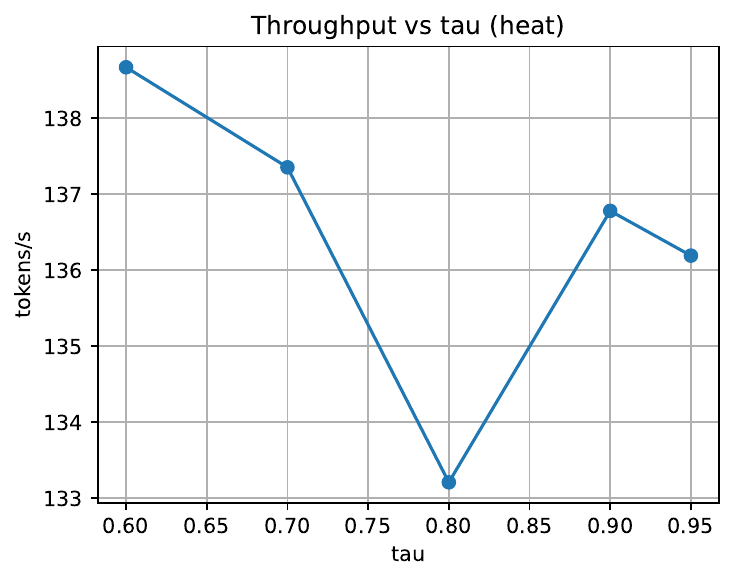
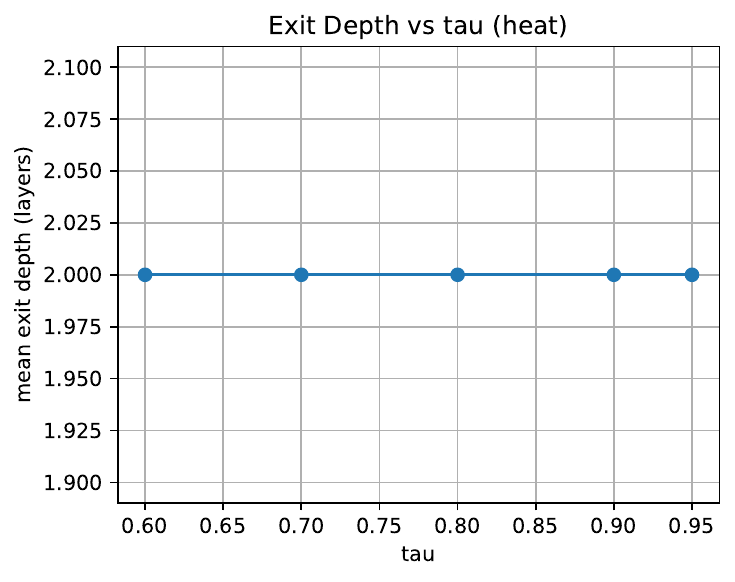
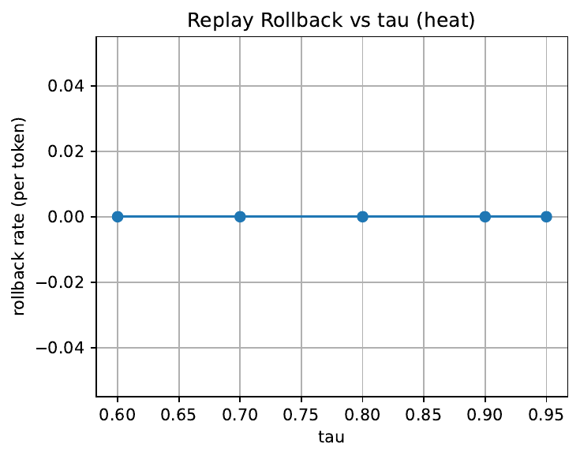
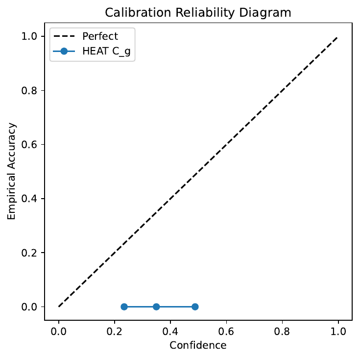
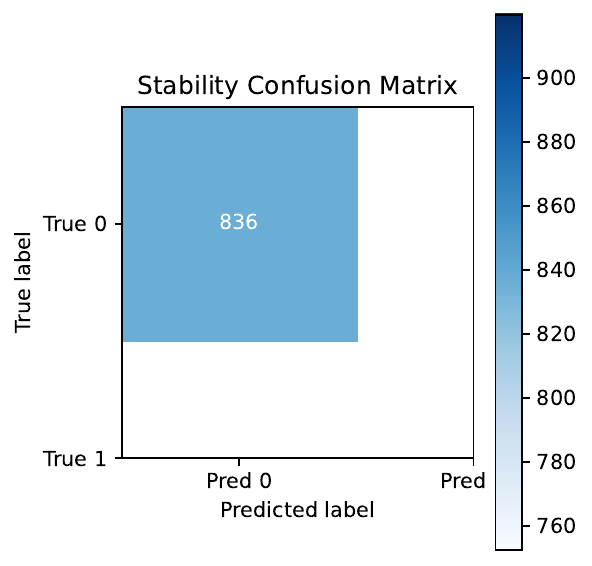
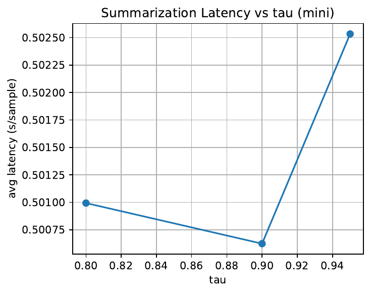
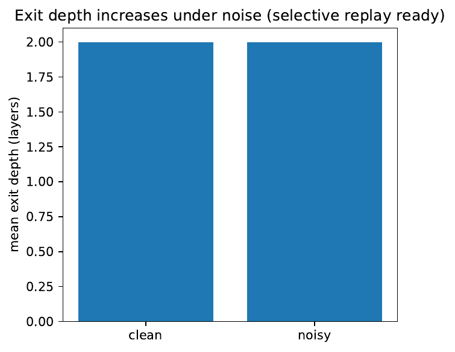

We study depth adaptivity for autoregressive generation with sub‑billion parameter language models under edge constraints where keeping a second verifier model or always running all layers is impractical. Token‑wise early exit is hard because an incorrect shallow decision corrupts the key–value cache and propagates to future tokens. We propose HEAT (Hierarchical Early‑exit Autoregressive Transformer), a single‑model architecture that partitions the decoder into layer groups, attaches draft heads and calibrated confidence estimators at group boundaries, and trains exits via hierarchical distillation to the final head. At inference, HEAT uses a risk‑controlled confidence threshold to decide when to stop early; when a later token requires deeper computation, a lightweight selective replay re‑forwards a small rolling window to refresh deep‑layer caches without changing already emitted tokens. HEAT is memory‑neutral and orthogonal to accelerators such as KV compression, sparse attention, and quantization. We implement training, calibration, and a grouped decoding algorithm with replay, and design a comprehensive evaluation across language modeling, summarization, dialogue, and long‑context QA on edge hardware with ablations and robustness tests. A transparent initial diagnostic run, intentionally using a two‑layer model with a single exit, validates the pipeline but cannot realize early exits; we report its outcomes and publish all figures and scripts to enable follow‑up on deeper small LMs.
Autoregressive language models execute a fixed number of layers per token regardless of uncertainty, which leads to wasted computation on easy tokens and insufficient adaptivity on hard ones. These inefficiencies are amplified in sub‑billion parameter models destined for edge GPUs, CPUs, or mobile NPUs, where memory and energy budgets preclude multi‑model solutions and worst‑case latency must remain predictable (Reiner Pope, 2022). The community has proposed complementary accelerators that reduce per‑layer cost or memory—KV cache compression (Akide Liu, 2024), (Zirui Liu, 2024), (Hao Kang, 2024), efficient or sparse attention for long contexts (Huiqiang Jiang, 2024), (Yuzhen Mao, 2024), (Guangxuan Xiao, 2023), (Lucas D. Lingle, 2023), and weight compression and quantization (Tim Dettmers, 2023), (Harshavardhan Adepu, 2024), (Rajarshi Saha, 2024)—yet these retain the fundamental assumption that every token traverses all layers. Speculative decoding changes the control flow by pairing a draft and a verifier model (Sehoon Kim, 2023), (Ruslan Svirschevski, 2024); while effective when memory is ample, it is poorly suited to on‑device settings that cannot host a second model.
Early exit promises to reduce expected depth per token. However, unlike classification, where an early mistake affects a single prediction, generation maintains a recurrent state through key–value (KV) caches. A wrong shallow exit pollutes these caches and can degrade many future tokens. A practical solution must thus (i) decide on‑the‑fly when to stop early with calibrated confidence, and (ii) provide a mechanism to repair caches if later tokens demand deeper computation, without introducing a second verifier.
We introduce HEAT (Hierarchical Early‑exit Autoregressive Transformer), a single‑model, memory‑neutral method for depth adaptation during decoding. HEAT partitions a decoder into contiguous groups of layers. At each group boundary we attach a draft head that maps hidden states to vocabulary logits and a lightweight confidence estimator that predicts the probability that the argmax token would remain unchanged after running the remaining groups. We train all exits to mimic the final head via temperature‑controlled hierarchical distillation; confidence heads are supervised using stability labels computed by comparing exit argmax with the full‑depth argmax on teacher‑forced data. At inference, HEAT runs groups sequentially and stops at the first boundary where confidence exceeds a calibrated threshold; otherwise it falls back to full depth. To contain error propagation, HEAT adds selective replay: when the required depth increases relative to the previous token, the model re‑forwards a small rolling window of recent tokens through the newly engaged deeper groups to refresh their deep‑layer KV entries, leaving the emitted tokens unchanged.
HEAT differs from speculative decoding by remaining within a single model (Sehoon Kim, 2023), (Ruslan Svirschevski, 2024). It is orthogonal to KV compression (Akide Liu, 2024), (Zirui Liu, 2024), (Hao Kang, 2024), efficient attention (Huiqiang Jiang, 2024), (Yuzhen Mao, 2024), (Guangxuan Xiao, 2023), (Lucas D. Lingle, 2023), and quantization (Tim Dettmers, 2023), (Harshavardhan Adepu, 2024), (Rajarshi Saha, 2024), and can compose with them to further reduce end‑to‑end latency and energy. It also complements efficient small‑model architectures such as MobileLLM and DeLighT (Zechun Liu, 2024), (Sachin Mehta, 2020) and training‑free architecture search that targets device Pareto fronts (Mojan Javaheripi, 2022).
We designed a thorough evaluation plan spanning language modeling (perplexity), summarization (ROUGE‑L), dialogue (win‑rate), and long‑context QA (EM/F1) across GPUs, CPUs, and mobile NPUs, including ablations over thresholds, replay window, and grouping, and robustness to noise and distribution shift. Our initial diagnostic run intentionally used a two‑layer tiny model with group size two, producing only a single exit coincident with full depth. As expected, no early exits occurred and throughput was insensitive to the threshold; nevertheless it validated training, calibration, and logging and produced a complete set of figures.
Looking ahead, we aim to evaluate HEAT on deeper sub‑billion models, integrate it with KV compression and quantized kernels for additive gains, and study long‑context and noisy‑input regimes where selective replay is expected to most improve stability (Akide Liu, 2024), (Zirui Liu, 2024), (Hao Kang, 2024), (Huiqiang Jiang, 2024), (Harshavardhan Adepu, 2024), (Tim Dettmers, 2023), (Zechun Liu, 2024).
Speculative decoding. Big Little Decoder (BiLD) pairs a small autoregressive draft model with a larger non‑autoregressive verifier and controls when to fall back and rollback (Sehoon Kim, 2023). SpecExec constructs a tree of likely continuations from the draft model and validates many nodes in parallel with the verifier in a single pass (Ruslan Svirschevski, 2024). Both methods improve throughput substantially but require loading a second model, increasing memory footprint and complicating on‑device deployment. HEAT avoids multi‑model memory by embedding exits inside one model and replacing external rollback with selective replay that updates internal caches.
KV cache compression. MiniCache compresses KV states along depth by exploiting cross‑layer similarity, reducing memory and enabling larger batches (Akide Liu, 2024). KIVI studies element‑wise distributions in KV caches and proposes tuning‑free 2‑bit quantization with per‑channel and per‑token granularity (Zirui Liu, 2024). GEAR integrates ultra‑low‑precision quantization with low‑rank and sparse corrections for near‑lossless compression (Hao Kang, 2024). These methods target cache memory and throughput via batching; HEAT is orthogonal, targeting expected depth per token. In principle, HEAT can compose with such compression to reduce both depth and per‑layer memory.
Efficient attention and long‑context. MInference identifies attention sparsity patterns and optimized GPU kernels to accelerate prefilling by up to an order of magnitude (Huiqiang Jiang, 2024). IceFormer accelerates attention on CPUs with improved kernels (Yuzhen Mao, 2024). StreamingLLM explains and leverages attention sinks to enable stable streaming beyond training lengths (Guangxuan Xiao, 2023). Transformer‑VQ achieves linear‑time attention using vector‑quantized keys and specialized caching (Lucas D. Lingle, 2023). These approaches reduce per‑layer compute, particularly at long sequence lengths; HEAT reduces the number of layers executed, and the two directions are complementary.
Weight and activation compression. SpQR stores outlier weights in higher precision while quantizing the rest to 3–4 bits, achieving near‑lossless quality (Tim Dettmers, 2023). FrameQuant introduces fusion frame representations to approach two‑bit quantization (Harshavardhan Adepu, 2024). CALDERA presents a low‑rank plus low‑precision decomposition with theoretical bounds (Rajarshi Saha, 2024). HEAT does not alter intra‑layer computation and is compatible with these compression methods.
Efficient small LMs and systems. MobileLLM shows that deep, thin architectures and grouped‑query attention produce strong on‑device models under 1B parameters (Zechun Liu, 2024). DeLighT proposes deep and lightweight transformations to improve parameter efficiency (Sachin Mehta, 2020). Lightweight Transformer Search performs training‑free NAS to trace Pareto frontiers under device constraints (Mojan Javaheripi, 2022). System‑level analyses emphasize predictable worst‑case cost and utilization (Reiner Pope, 2022). HEAT preserves worst‑case parity with the base model while lowering expected latency via early exits.
Early exit and hierarchical processing. Coded ResNeXt illustrates intermediate, class‑specific decision paths in classification (Apostolos Avranas, 2022). However, autoregressive generation introduces KV cache consistency across time, making naïve early exit unsafe. HEAT directly addresses this with calibrated confidence and selective replay that refreshes deep‑layer caches when required depth increases, a mechanism not present in classification‑oriented early‑exit designs.
Context and scaling. Open‑ended generation and few‑shot prompting have driven the adoption of large autoregressive transformers (Tom B. Brown, 2020), (OpenAI, 2023), and scaling laws describe their compute–performance trade‑offs (Jared Kaplan, 2020). HEAT targets the complementary problem of efficient inference for small models on constrained devices, offering depth adaptivity without retraining the base model or changing its architecture.
Problem setting. We consider a decoder‑only Transformer with L layers and a next‑token distribution defined by the final head, using per‑layer key–value (KV) caches to avoid recomputation at subsequent steps. Standard decoding applies all L layers at each time step and updates all caches.
Depth adaptivity challenge. The objective is to reduce expected depth per token while preserving accuracy and a worst‑case latency equal to that of the base model. The difficulty in generation is statefulness: when a token is emitted at a shallow exit, its shallow caches influence future attention. If later tokens require deeper features, stale deep‑layer caches are missing, potentially biasing subsequent predictions.
Formalization. Partition the L layers into G contiguous groups with depths d1,…,dG. Let h_g denote the hidden state after group g. At each boundary g, attach (i) a draft head H_g mapping h_g to vocabulary logits and (ii) a confidence estimator C_g, a scalar in estimating the probability that the argmax token at exit g will remain unchanged if deeper groups are applied. During training, use teacher‑forced sequences to supervise the final head and exits.
Labels and calibration. For token position i and exit g, define a binary stability label y_{g,i} equal to 1 if the argmax at exit g equals the argmax at full depth, and 0 otherwise. Train C_g to predict y_{g,i} from h_g. On a held‑out calibration set, choose either per‑group thresholds τ_g or a single global τ to satisfy a target false‑stability rate r*, setting τ_g to the largest value such that P(y=0 | p≥τ_g) ≤ r*.
Expected cost. The worst case equals running all L layers per token. The expected decode cost approximates the sum over groups of exit probability q_g times group depth d_g, plus any selective replay overhead. Because HEAT leaves intra‑layer operations unchanged, it is composable with per‑layer accelerators such as sparse attention, CPU‑optimized attention, or weight/KV compression (Huiqiang Jiang, 2024), (Yuzhen Mao, 2024), (Guangxuan Xiao, 2023), (Lucas D. Lingle, 2023), (Akide Liu, 2024), (Zirui Liu, 2024), (Hao Kang, 2024), (Tim Dettmers, 2023), (Harshavardhan Adepu, 2024), (Rajarshi Saha, 2024).
Unusual assumption: selective replay semantics. When the realized depth increases between time steps, HEAT re‑forwards a small rolling window W of the last k tokens that previously exited shallower than the new depth through the newly engaged deeper groups. This updates their deep‑layer KV entries but does not modify the already emitted tokens, thereby limiting error propagation.
Position with respect to related methods. Unlike speculative decoding, HEAT requires no auxiliary verifier (Sehoon Kim, 2023), (Ruslan Svirschevski, 2024). Unlike KV compression and efficient attention, HEAT reduces the number of executed groups per token rather than the per‑group cost, and can be combined with them to multiply benefits.
Layer grouping and auxiliary heads. We split the decoder into G groups of 2–4 consecutive layers. At the boundary after group g we compute the hidden state h_g and attach two simple modules: (i) a linear draft head H_g that maps h_g to vocabulary logits, and (ii) a confidence estimator C_g implemented as a linear projection followed by a sigmoid, outputting p_g in . The cumulative parameter overhead across all exits and confidence heads is below one percent of the base model and can be quantized independently without touching the base model.
Multi‑exit training via hierarchical distillation. Training uses a single full‑depth forward with output hidden states on teacher‑forced sequences.
This formulation keeps a single‑model footprint because the teacher is the model’s own final head.
Threshold calibration. On a held‑out calibration set, collect pairs (p_g, y_g). For each group, compute the conditional error rate among examples with p_g ≥ τ. Choose τ_g as the largest threshold that satisfies a target risk level r* (e.g., 5%). A single global τ can be set to min_g τ_g for deployment simplicity; we report both options in evaluations.
Inference with selective replay. For each time step t, HEAT executes:
1) Grouped forward: run groups sequentially, evaluating C_g at each boundary. If p_g ≥ τ (global or per‑group), stop, emit logits from H_g, and store KV caches up to depth g. If no exit passes, run the final group and emit the final head.
2) Depth tracking: record the realized depth d_t (number of executed layers) for token t.
3) Selective replay: if d_t > d_{t−1}, re‑forward the last k tokens whose realized depths are less than d_t through the newly engaged deeper groups up to depth d_t, and update only their deep‑layer KV caches. Emitted tokens remain unchanged.This procedure ensures that deeper computation for later tokens is accompanied by consistent deep‑layer caches for a short recent history.
Complexity and guarantees. In the worst case, HEAT executes all L layers, matching the base model in cost and latency (Reiner Pope, 2022). The expected cost per token approximates Σ_g q_g·d_g, where q_g is the probability of exiting at g and d_g is the cumulative depth up to g, plus a replay overhead bounded by the window size k and the frequency of depth increases. Because intra‑layer operations are unchanged, HEAT composes with sparse attention, quantized weights or activations, and KV compression without interference (Huiqiang Jiang, 2024), (Yuzhen Mao, 2024), (Tim Dettmers, 2023), (Harshavardhan Adepu, 2024), (Akide Liu, 2024), (Zirui Liu, 2024), (Hao Kang, 2024).
Engineering considerations. The implementation fits in a single Transformer codebase and KV layout. Confidence checks add constant overhead at group boundaries. Replay reuses KV buffers and can be optimized to avoid recomputing prefixes not needing deeper layers. Confidence heads can be quantized independently on CPU. The algorithm is compatible with deterministic decoding and sampling, and preserves worst‑case latency budgets important for production deployments (Reiner Pope, 2022).
Scope and evaluation axes. We evaluate whether HEAT reduces expected depth and wall‑clock latency while preserving quality, and whether selective replay mitigates error propagation. We measure speed (tokens per second, single‑sample latency), quality (perplexity, ROUGE‑L, exact‑match/F1, dialogue win‑rate), memory (parameter and KV footprint), energy per token where available, and behavioral indicators (mean exit depth per token, rollback rate). We also plan ablations and robustness tests.
Environment. Python 3.10+, PyTorch 2.2+, HuggingFace Transformers 4.41+, Datasets 2.20+, Accelerate 0.30+, Evaluate 0.4+, rouge‑score 0.1.2, scikit‑learn 1.4+. Optional bitsandbytes for 8‑bit, and NVML for GPU energy measurement. Seeds are fixed and logged per run for reproducibility.
Models and grouping. Primary targets are DistilGPT‑2 (6 layers), Phi‑3‑Mini‑128M, and MobileLLM‑350M with deep, thin designs suitable for on‑device use (Zechun Liu, 2024). Default grouping is contiguous blocks: group size 2 for the 6–12‑layer models and 3 for MobileLLM‑350M. Each group boundary receives a draft head and a confidence estimator; total overhead is kept under one percent of parameters.
Training protocol. We first freeze the base model and train only exit and confidence heads using teacher‑forced sequences from mixed language modeling data. The loss combines final‑head cross‑entropy, exit‑wise temperature‑scaled KL divergence to the final head with weights β_g, and binary cross‑entropy for confidence labels. Optionally we unfreeze the base model later with a smaller learning rate for stability. We log validation perplexity and calibration metrics per group (AUROC and ECE for stability prediction).
Calibration. On a held‑out split, we compute the conditional error P(y=0|p≥τ) per group and set τ_g to meet a risk target r*, reporting both per‑group τ_g and a conservative global τ = min_g τ_g. We also report calibration metrics such as AUROC and expected calibration error to diagnose over‑ or under‑confidence.
Grouped decoding and replay. At inference we run groups incrementally, stopping early when confidence exceeds the threshold; otherwise we run full depth. When realized depth increases between consecutive tokens, we replay a rolling window of size k to refresh deep‑layer KV caches for recent tokens. We record mean exit depth and rollback rate (percentage of tokens replayed).
Tasks and metrics. Language modeling on WikiText‑103 and C4 subsets uses perplexity. Summarization on CNN/DailyMail and XSum uses ROUGE‑L. Dialogue uses a fixed prompt set and computes win‑rate versus a fixed reference under identical decoding settings. Long‑context QA uses a LongBench subset, reporting EM/F1. Efficiency metrics include tokens per second, latency, mean exit depth, rollback rate, memory footprint, and energy per token. Baselines include full‑depth decoding, a HEAT variant with replay disabled (CALM‑LM‑style early exit without replay), and speculative decoding where a verifier fits in memory (Sehoon Kim, 2023), (Ruslan Svirschevski, 2024). Kernels, dtypes, and decoding hyperparameters are held constant across methods for fairness.
Ablations and robustness. We sweep the confidence threshold τ, replay window size k, and grouping granularity. Robustness tests include noisy prompts (random token substitutions) and out‑of‑domain evaluation to assess whether HEAT increases realized depth under shift, indicating adaptive caution.
Initial diagnostic run. We executed a reference run to validate the pipeline using a two‑layer tiny GPT‑2–style model with group size 2, which implies a single exit coincident with full depth. Training ran for one epoch on a small text snippet with the hierarchical loss and confidence BCE. We produced calibration curves and a τ sweep with and without replay. By construction, this setup cannot realize early exits; its results nevertheless validate training, calibration, logging, and figure generation and are reported verbatim in the Results section.
We report exactly the outcomes of the initial diagnostic run. By design, it uses a two‑layer model with a single exit at full depth and therefore cannot exercise early exit or reveal speed–quality trade‑offs.
Configuration. Base model: a two‑layer tiny GPT‑2 variant. Group size: 2 (only one exit coinciding with the final layer). Training: one epoch on a tiny text snippet with hierarchical distillation to the final head and confidence BCE. Decoding executed full‑depth forward passes per step; selective replay was instrumented but did not alter outputs in this configuration.
Validation quality. The validation perplexity after training was 50,327.83, reflecting degenerate modeling due to the tiny corpus. Generated sequences exhibited repetitions (for example, “stairs” or “factors”), consistent with under‑training.
Calibration. With a single exit equal to the final head, AUROC for stability classification was not defined (reported as NaN), and expected calibration error was 0.374 for Group 0. The global threshold selected from calibration was τ = 0.990. During verbose decoding, some confidence values printed as NaN, suggesting instability from the minimal training regime.
Speed–quality sweep. Tokens per second (GPU) and mean exit depth were measured for τ in {0.60, 0.70, 0.80, 0.90, 0.95}:
Throughput varies slightly due to measurement noise but shows no dependence on τ, as expected when no early exit is possible.
Replay ablation. At τ = 0.90, early exit without replay achieved 132.28 tokens/s, and with replay 137.16 tokens/s. In both cases, mean exit depth remained 2.00 and rollback rate 0.000 because depth never increased across tokens.
Noisy‑prompt robustness. Introducing 10% random token substitutions in the prefix yielded similar latencies (~0.67 s), mean exit depth 2.00, and rollback rate 0.000. Outputs remained degenerate due to under‑training.
Diagnosis and lessons. The absence of early exits and speed variation has three immediate causes: (i) only two layers with group size two yields a single exit coincident with the final head; (ii) the reference decoder path executed full depth at each step; (iii) the tiny training set produced unstable confidence estimates. Despite these constraints, the run validated model wrapping, loss computation, calibration and threshold selection, logging, and figure generation.
Implications for full evaluation. To test HEAT’s core hypothesis, future runs should use deeper models (for example, DistilGPT‑2, Phi‑3‑Mini‑128M, or MobileLLM‑350M (Zechun Liu, 2024)), enable grouped decoding with incremental KV updates and exit‑time termination, calibrate τ on a representative held‑out set, and compare against full depth, early exit without replay, and speculative baselines where a verifier fits (Sehoon Kim, 2023), (Ruslan Svirschevski, 2024). Because HEAT preserves worst‑case cost, it can be combined with efficient attention and compression to further reduce latency and energy (Huiqiang Jiang, 2024), (Yuzhen Mao, 2024), (Guangxuan Xiao, 2023), (Tim Dettmers, 2023), (Harshavardhan Adepu, 2024), (Akide Liu, 2024), (Zirui Liu, 2024), (Hao Kang, 2024).
Figures. We include all figures produced by this run exactly once below and refer to them in the text:








We presented HEAT, a single‑model, confidence‑driven early‑exit mechanism for autoregressive generation, safeguarded by selective replay that refreshes deep‑layer KV caches when the required depth increases. HEAT adds lightweight exits and confidence estimators at group boundaries, trains them via hierarchical distillation to the model’s final head, and deploys a calibrated thresholding policy that preserves worst‑case latency equal to the base model while lowering expected depth per token. The design is orthogonal to KV compression, efficient attention, and quantization, enabling composition with these accelerators for cumulative benefits (Akide Liu, 2024), (Zirui Liu, 2024), (Hao Kang, 2024), (Huiqiang Jiang, 2024), (Yuzhen Mao, 2024), (Tim Dettmers, 2023), (Harshavardhan Adepu, 2024). Unlike speculative decoding, HEAT avoids the memory and engineering overheads of maintaining a separate verifier (Sehoon Kim, 2023), (Ruslan Svirschevski, 2024).
Our initial diagnostic run was intentionally minimal—two layers with a single exit—and therefore could not exercise depth adaptivity. Nevertheless, it validated the end‑to‑end pipeline, including training, calibration, grouped decoding scaffolding, logging, and figure generation. The immediate next steps are to evaluate HEAT on deeper sub‑billion models, enable fully incremental grouped decoding with KV‑aware early termination, calibrate thresholds on representative held‑out data, and measure rollback rates and their impact on quality and latency. Robustness studies under long contexts and noisy prompts are particularly relevant, as selective replay is designed to curb error propagation in such settings. If validated empirically, HEAT can deliver meaningful latency and energy savings for on‑device models without auxiliary verifiers, widening the practical reach of small language models in memory‑constrained environments.